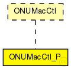

This documentation is released under the Creative Commons license
This documentation is released under the Creative Commons licenseTODO auto-generated module
The following diagram shows usage relationships between types. Unresolved types are missing from the diagram.
The following diagram shows inheritance relationships for this type. Unresolved types are missing from the diagram. 
| Name | Value | Description |
|---|---|---|
| display | i=block/queue |
| Name | Direction | Size | Description |
|---|---|---|---|
| upperLayerIn | input |
higher layer protocols or applications |
|
| upperLayerOut | output |
higher layer protocols or applications |
|
| lowerLayerIn | input |
to Ethernet MAC |
|
| lowerLayerOut | output |
to Ethernet MAC |
// // TODO auto-generated module // simple ONUMacCtl_P like ONUMacCtl { parameters: @display("i=block/queue"); gates: input upperLayerIn; // higher layer protocols or applications output upperLayerOut; // higher layer protocols or applications input lowerLayerIn; // to Ethernet MAC output lowerLayerOut; // to Ethernet MAC }
This documentation is released under the Creative Commons license